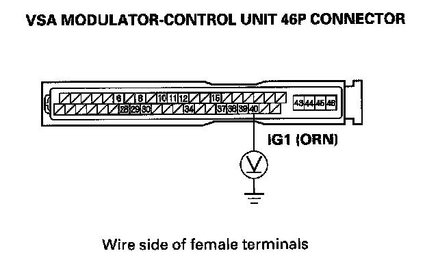

ABS Indicator, Brake System Indicator, and VSA Indicator Do Not Go Off at the Same Time
ABS indicator, brake system indicator, and VSA indicator do not go off at the same time1. Turn the ignition switch OFF.
2. Check the No. 29 (10 A) fuse in the under-dash fuse/relay box.
Is the fuse blown?
YES-Install a new No. 29 (10 A) fuse, and recheck.
NO-Reinstall the checked fuse, then go to step 3.
3. Disconnect the VSA modulator-control unit 46P connector.
4. Turn the ignition switch ON (II).
5. Measure the voltage between VSA modulator control unit 46P connector terminal No. 40 and body ground.

Is there battery voltage?
YES-Go to step 6.
NO-Repair open in the wire between the No. 29 (10 A) fuse in the under-dash fuse/relay box and the VSA modulator-control unit.
6. Turn the ignition switch OFF.
7. Check for continuity between VSA modulator control unit 46P connector terminal No. 43 and body ground.
Is there continuity?
YES-Go to step 8.
NO-Repair open in the wire between the VSA modulator-control unit and body ground (G303).
8. Disconnect gauge control module connector A (12 P).
9. Check for continuity between VSA modulator control unit 46P connector terminal No. 38, and No. 39 and gauge control module connector A (12P) No. 6, and No. 12 respectively.
Is there continuity?
YES-Check for loose terminals in the VSA modulator-control unit 46P connector. Check for a loose connection at G303. If necessary, substitute a known-good VSA modulator-control unit and retest.
NO-Repair open in the wire between the gauge control module and the VSA modulator-control unit.